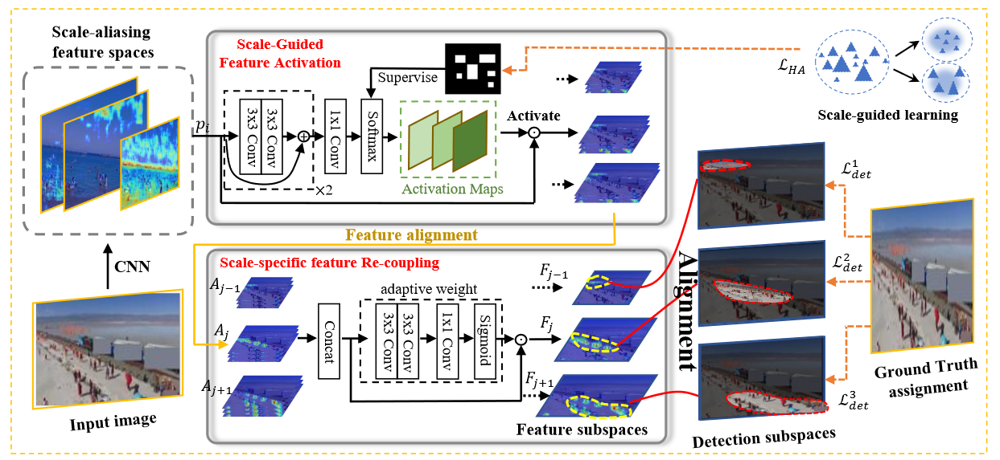

Guangqian GuoPh.D. candidateUnmanned Systems Technology Research Institute Northwestern Polytechnical University Xi'an, China. Phone: 177-9147-4785 Email: guogq21@mail.nwpu.edu.cn; Github: https://github.com/guangqian-guo; |
|
I am a Ph.D. candidate at the Unmanned Systems Technology Research Institute, Northwestern Polytechnical University (NWPU).
My research interests include computer vision and deep learning, specifically for Weakly-Supervised Learning, Tiny Object Detection, and Non-salient Object Segmentation.
 |
*Guangqian Guo, Pengfei Chen, Xuehui Yu, Zhenjun Han, Qixiang Ye, Shan Gao
HANet: Save the Tiny, Save the All: Hierarchical Activation Network for Tiny Object Detection |